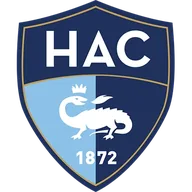

Лорьян — Ренн прогноз на матч 22 ноября
Расчёт модели
- 1,6 : 1,4ожидаемые голы
- 58 %тотал больше 2,5
- 61 %обе забьют
Цифры считает модель по данным сайта, а не эксперт. Это вероятности, а не гарантия исхода. Как считает модель · словарь терминов.
- ТурнирЛига 1
Коротко о матче
По форме разница заметная: в пяти последних матчах Лорьян — 3 победы, Ренн — 1 победа. Слабое место — оборона: Ренн — в среднем 1,8 пропущенного мяча за игру в этих пяти матчах, так что у соперника будут моменты.
Стоит учесть и площадку: дома Лорьян — 2 победы в 5 матчах, на выезде Ренн — 1 победа в 6. В последний раз команды встречались 24 января 2026 года: Ренн — Лорьян 0:2.
Модель чуть выше оценивает шансы одной стороны: Лорьян — 42 % на победу. Это оценка по данным, а не обещание исхода.
Форма: последние матчи
Лорьян 3 победы из 5
- В1:0
- В1:0
 Н0:0
Н0:0- П0:2

В2:0
Ренн 1 победа из 5
 Н2:2
Н2:2- В3:0
- П2:5
- Н0:0
- П1:2
Личные встречи
- Ренн0:2Лорьян
- Лорьян4:0Ренн
Положение в таблице
| Команда | Место | И | В | Н | П | Голы | Очки |
|---|---|---|---|---|---|---|---|
| Лорьян | 10 | 10 | 4 | 3 | 3 | 9:8 | 15 |
| Ренн | 8 | 10 | 5 | 1 | 4 | 21:21 | 16 |
Другие матчи Лиги 1 в этот день
Куда дальше
Материалы носят информационный характер и не гарантируют результат. Реклама букмекеров на сайте не размещается. Сайт только для совершеннолетних (18+).